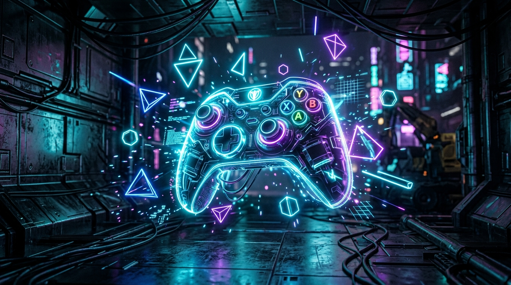
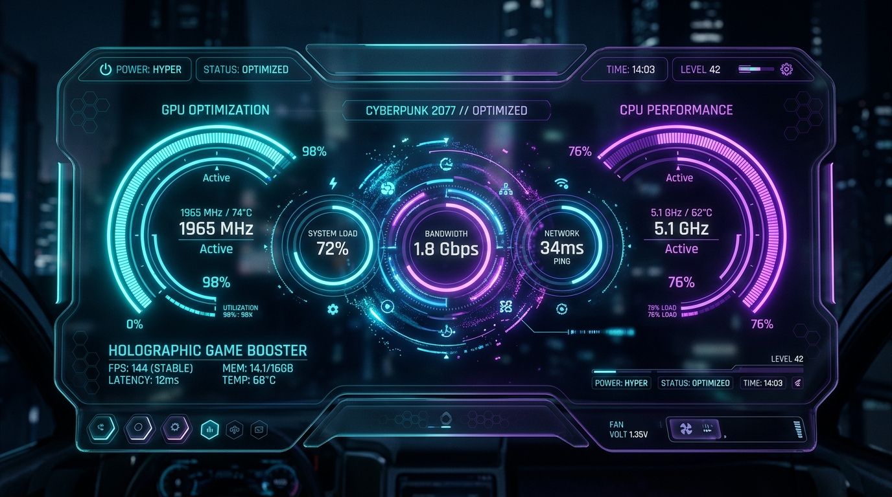

کتابخانه بازیهای شخصی مدرن و آفلاینمحور با قدرت Tauri 2، زبان Rust و React 19. مجهز به بوستر هوشمند سختافزاری، ویژوالایزر صوتی سینماتیک و نگهبان اتمیک فایلهای سیو با مصرف باورنکردنی تنها ۶۰ مگابایت رم.

روی هر ماژول کلیک کنید تا قدرت عملکرد و رابط کاربری اختصاصی آن را به صورت زنده تجربه نمایید:
شناسایی خودکار بازیهای استیم، اپیک، GOG و فایلهای اجرایی سیستم

بدون ردیابی، بدون تبلیغات و بدون فروشگاههای اجباری. فقط عملکرد ناب بومی سیستم و تجربه لذتبخش گیمینگ.
بهینهسازی دینامیک برق ویندوز (Ultra Performance Plan)، آزادسازی رم و به صفر رساندن مصرف GPU در حالت بیکار.
دریافت خودکار پوسترهای باکیفیت از IGDB و SteamGridDB بدون نیاز به فیلترشکن از طریق پروکسی Edge کلودفلر.
پخش موسیقیهای متن بازیها همراه با ویژوالایزر فرکانسی سینماتیک زنده و امکان ذخیره آفلاین.
تشخیص خودکار پوشه ذخیره بیش از ۱۹,۰۰۰ بازی با معماری اتمیک ACID برای جلوگیری ۱۰۰٪ از سوختن سیوها.
آپدیت بدون دردسر و بدون نیاز به دانلود دستی مجدد؛ اعتبارسنجی شده با امضای رمزنگاری امن Minisign Ed25519.
نقشه حرارتی ۹۱ روزه فعالیت، رادار عادات بازی در شبانهروز، رهگیری دقیق ساعات بازی و سیستم XP.
ببینید چگونه معماری کامپایلشده Rust لانچرهای کند کرومیومی را پشت سر میگذارد:
| معیار بررسی | Nexus Launcher | استیم / اپیک / GOG |
|---|---|---|
| مصرف حافظه رم در حالت بیکار | حدود ۶۰ مگابایت | ۶۰۰ الی ۱۲۰۰ مگابایت |
| زمان راهاندازی اولیه (Cold Boot) | کمتر از ۰.۸ ثانیه | ۴ تا ۱۰ ثانیه |
| ردیابی و ارسال داده (Telemetry) | کاملاً صفر (۰٪) | ارسال دائمی دیتای کاربر |
| پشتیبانی آفلاین | ۱۰۰٪ آفلاینمحور | نیاز اجباری به لاگین آنلاین |
بله، نکسوس یک نرمافزار ۱۰۰٪ رایگان و متنباز (Open Source) تحت مجوز معتبر MIT است. هیچ هزینه، اشتراک یا تبلیغاتی در آن وجود ندارد.
بله. نکسوس به عنوان داشبورد جامع عمل کرده و تمام بازیهای استیم، اپیک گیمز، GOG و همچنین فایلهای اجرایی exe بازیهای کرکشده یا دستی را در یک محیط زیبا دستهبندی میکند.
به محض انتشار نسخه جدید در گیتهاب، لانچر آن را به صورت امن در پسزمینه دانلود کرده و با یک کلیک ارتقا میدهد بدون اینکه سیوها، تصاویر یا تنظیمات شما پاک شوند.
خیر! نکسوس دارای پروکسی ابری کلودفلر لبه است که تمام تصاویر و اطلاعات دیتابیس را بدون نیاز به هیچ تنظیماتی بلافاصله بارگذاری میکند.
به جمع گیمرهایی بپیوندید که سرعت، حریم خصوصی و آزادی عمل را به برنامههای سنگین ترجیح میدهند.
دانلود رایگان نکسوس لانچر v0.2.0